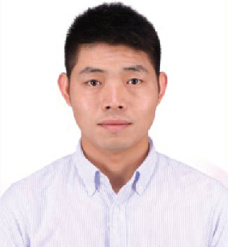

|
X-ZY Group@BIT
|
 |
Yuan Zhang
Office: Room 1005, No.6 Building of the National-Defense Technology Garden
Address: 5 Zhongguancun South, Beijing, 100081, China
Telephone: +86 17801025178
Associate Professor
School of Automation, Beijing Institute of Technology
Beijing, China
Email: zhangyuan14@bit.edu.cn
Google Scholar
|
Brief Biography
Currently, I am an Associate Professor in the School of Automation, Beijing Institute of Technology, China.
Before, I was
a Post-doctoral Fellow in the same institute, working with Prof. Yuanqing Xia.
In October 2019, I obtained
Ph.D. degree at Tsinghua University, Bejing, China, under the supervision of Prof. Tong Zhou, who was an IEEE Fellow and CAA Fellow, and also the Associate Editor of the two top journals in control, IEEE TAC and Automatica.
I obtained my bachelor degree majoring in control science and engineering at
Tongji University, Shanghai, China.
I was born in July, 1993.
I am looking for self-motivated Ph.D./master/undergraduate students to join my group. Please email me your CV if you are interested.
Research Interests
I focus on combining computational tools from modern computer science theory with analysis and optimization of control systems:
Analysis and control of large-scale network systems, with applications to the power networks, cloud control systems, etc.
Combinatorial optimization with applications to control systems
Cyber-security and data-driven control and analysis
>
Honors & Awards
Excellent Doctoral Dissertation Award of Tsinghua University, 2020 Selected in the China Postdoctoral Innovative Talent Support Program, 2020 Outstanding Postdoctor of Beijing Institute of Technology,2021 Top Ten Research Progress of China Postdoctoral Innovative Talent Support Program in 2020,2021 Excellent Graduate of Department of Automation, Tsinghua University, 2020
Service
I am an active reviewer of the following journals and conferences: IEEE TAC, Automatica, IEEE TCNS,IEEE L-CSS, IJRNC, Europe Journal of Control, International Journal of System Science, Neurocomputing, the Open Public Health Journal, IEEE CDC, ACC, IFAC, CCC, etc.
Co-char of CCC 2021. Invited as the Academic Host of the 4th Form of China Postdoctoral Innovative Talent Support Program.
Advice for Researchers & Students
Links
|
{kind=link}